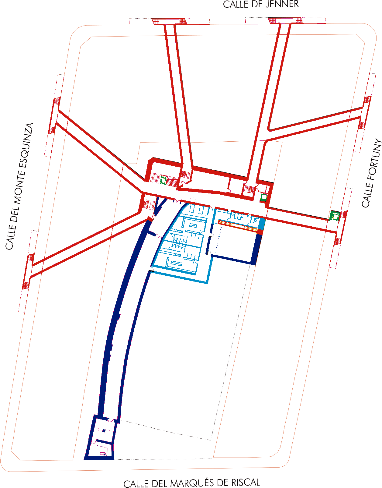
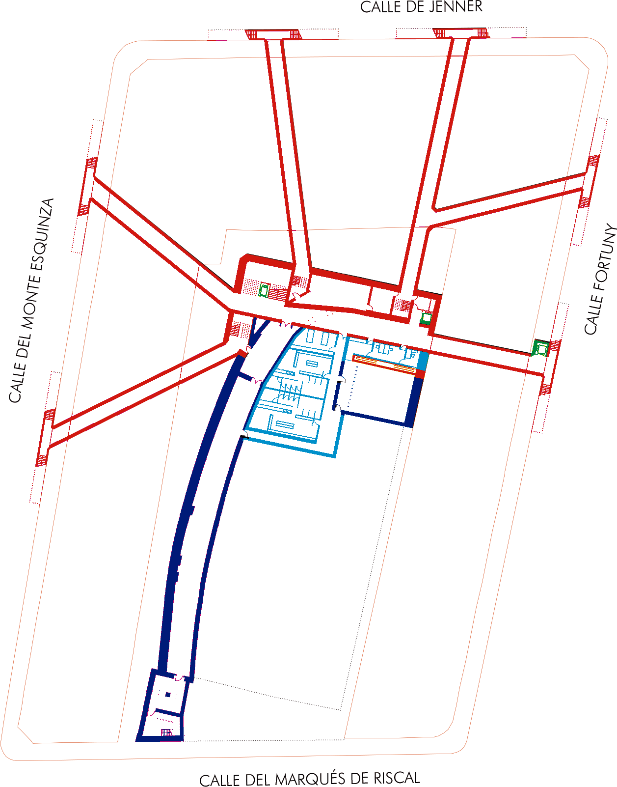

Concurso de proyectos para la adecuación y rehabilitación del edificio Beti-Jai. Madrid. 2018
Lleva la propuesta por título un brindis; el que se hace cuando se ha llegado al punto –nunca mejor dicho- a partir del cual ya solo queda certificar el éxito. Creemos que es el momento en el que se encuentra por fin la recuperación del Frontón Beti-Jai de Madrid.
Cuando heredamos un edificio de marcadas condiciones y condicionantes que tiene más de 100 años de vida, el reto estriba en conjugar con sensibilidad pero también seguridad elementos a priori contrarios: la recuperación de una substancia construida según unos determinados parámetros normativos, funcionales, estéticos y necesidades de confort, que serían los propios de su época, y unas necesidades actuales, contemporáneas.
Estamos firmemente convencidos que precisamente en enfrentar los problemas que se plantean en ese choque
de intereses radica una de las más importantes estrategias para asegurar el cuidado y puesta en valor del patrimonio: que la edificación siga albergando usos y usuarios para que su mantenimiento sea tarea necesaria, obvia y eficaz y su vida útil entre en sucesivas nuevas etapas perpetuándose en el tiempo, para disfrute de generaciones de usuarios.
El edificio se resuelve en dos ámbitos: la cubierta y el bajo rasante. La cubierta, por ampliación de usos y medio ambiente; se inspira en el maestro Frei Otto y su solución para Bad Hersfeld, Alemania: ligera, textil, retráctil, se tensa mediante un anillo de compresion y cinco mástiles en medianería y se recoge a modo de cortina sobre la pared de izquierda. En el sótano, la evacuación de ese aforo en una manzana de Chamberí...
 
